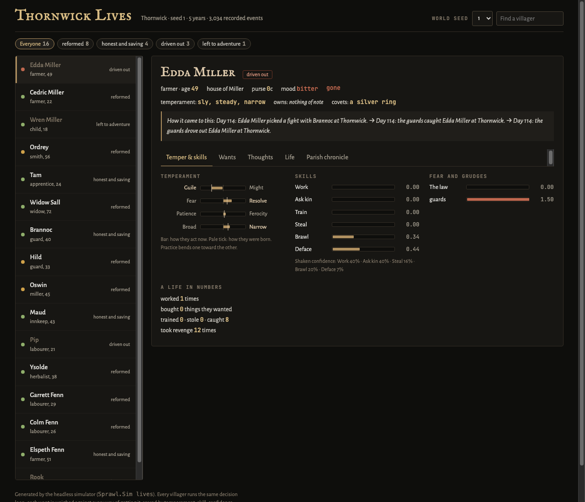
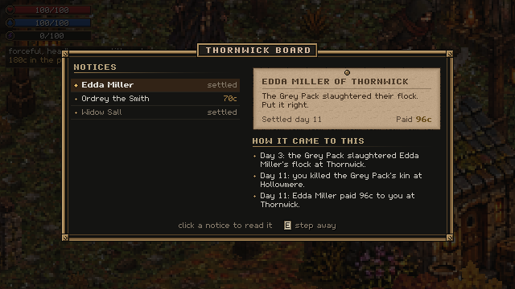
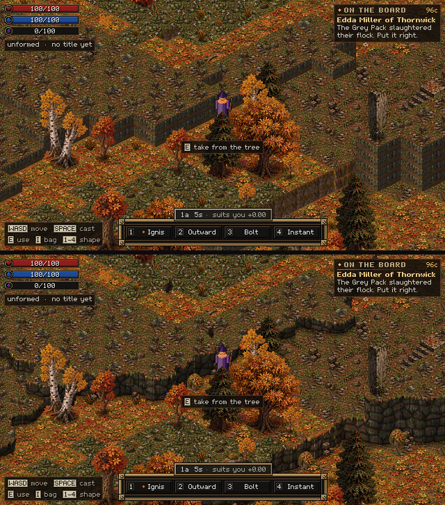
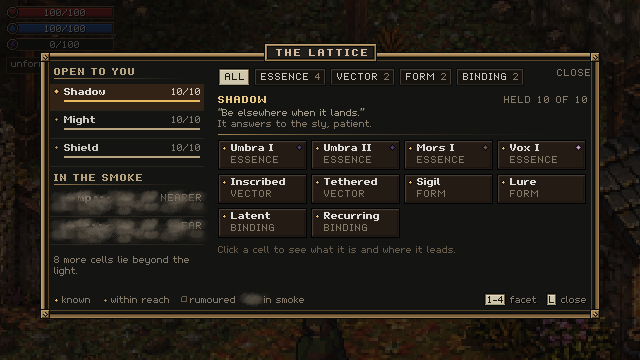

Day two: a world forged from a seed, and people with lives
23 September 2026 · Day 2
Day two was about depth. The world forge started making biomes that form real regions, and the world is now written to disk once and read back. The villagers got families and friendships, and they can leave home for reasons. The game also got sound, all of it generated from code.

Biomes as data
Overnight the biomes became data files instead of code. Each file says what a biome's ground, trees, water and edges look like. A biome lab renders every one of them to a sheet, so a biome can be judged before any art has been painted for it. A blind critique of those sheets came back saying water didn't read as water and several biomes looked alike, and both were fixed before breakfast.
By the evening, biomes formed real regions instead of scattering at random. Some pairs should never touch, like glacier and grassland, or jungle and taiga. The forge finds every such pair and turns one side into a buffer biome that can sit next to both, repeating until none are left. That is how the world grows transitions instead of seams.
Forge once, read forever
A world is now forged once, baked and written to disk. Every launch after that reads it back from the file, in a few milliseconds. Old worlds keep loading when the generator changes, and fixture worlds in the tests make sure of it.
People with lives
The headless simulator can run a village for years in a few seconds, and on day two its villagers became people. They form families, with partners, pregnancy, births, children who come of age and old age. They build friendships, and grudges that cool over time. Leaving home became an outcome with reasons: a villager might be driven out by the guards, set off to adventure, or reform, and each one can be traced back through the ledger to the day it happened.
The team also built a research prototype of notices answered by deeds. Kill the wolves troubling a farm, and the notice posted against them is settled, and the villager who posted it pays you.

Cliffs that aren't boxes
The terraced world had cliffs that looked like stacked crates. Four fixes were mocked up on the same patch of map, and one was picked: organic edges, stone faces, and grass hanging over the lip.

Sound from code
Everything Sprawl ships is made by its own code, including the sound. Day two brought an adaptive music prototype that shifts between calm, sneaking and fighting, with ambience for the autumn woods: birds by day, then owls and crickets at dusk. Footsteps change between leaf litter, dirt, stone and grass.
The lattice gets a screen
The magic system got its own screen. The lattice shows the cells you hold, and smoke hides what you haven't opened yet, with rumours of what lies inside.

The safety nets
Every change now runs the core tests, the world simulator and a full game build before it can be accepted. A save snapshot brings the ledger, parish, progression and bag back exactly as they were.
End of day two: about 400 tests, a forge that makes regions, and a village you can read like a novel.